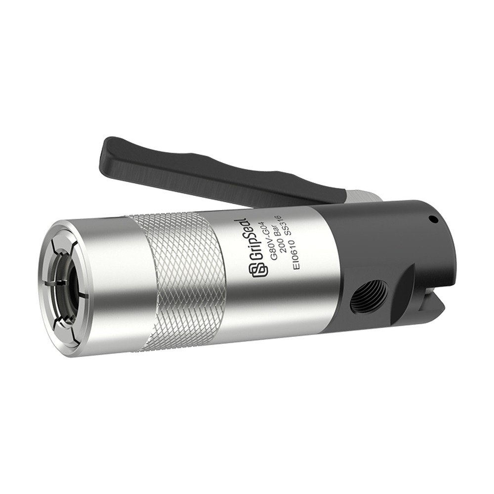
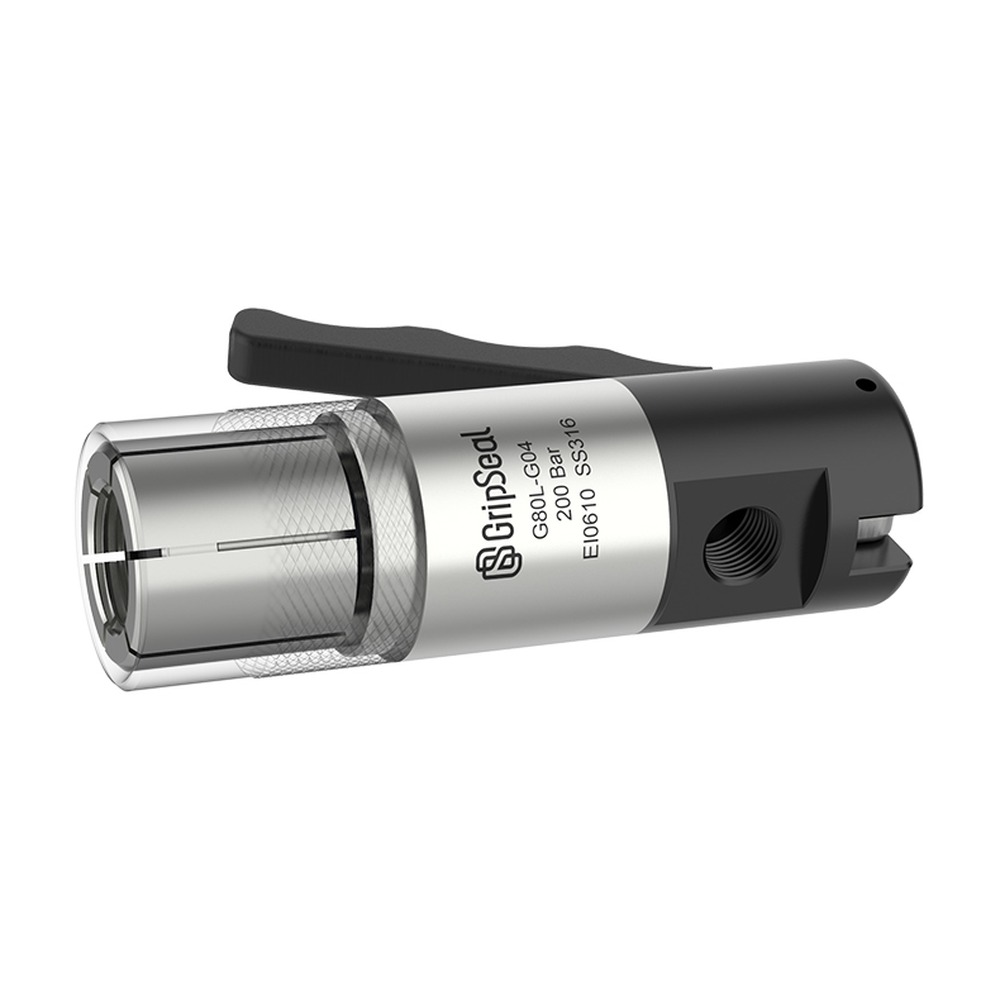
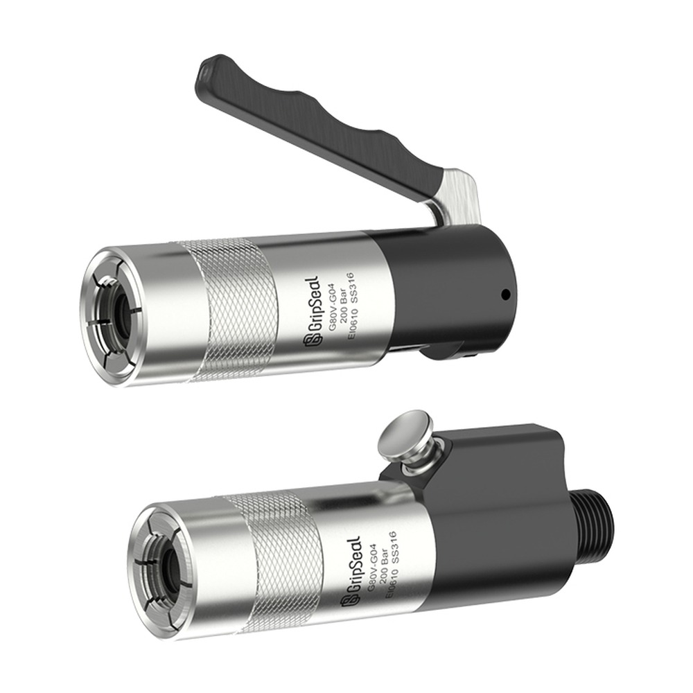
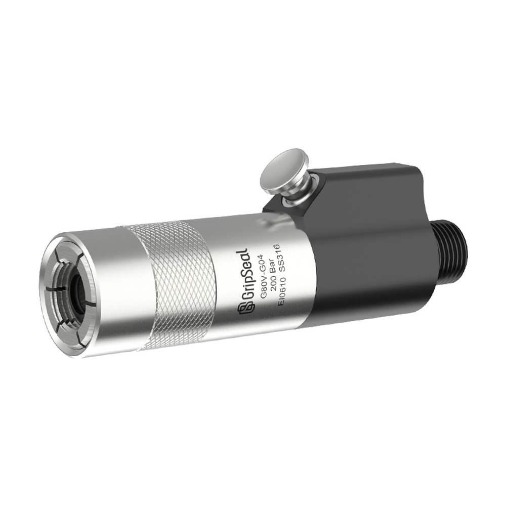
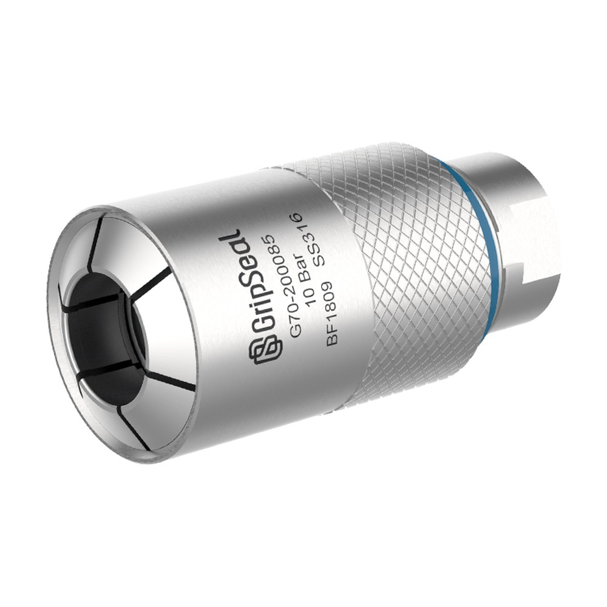
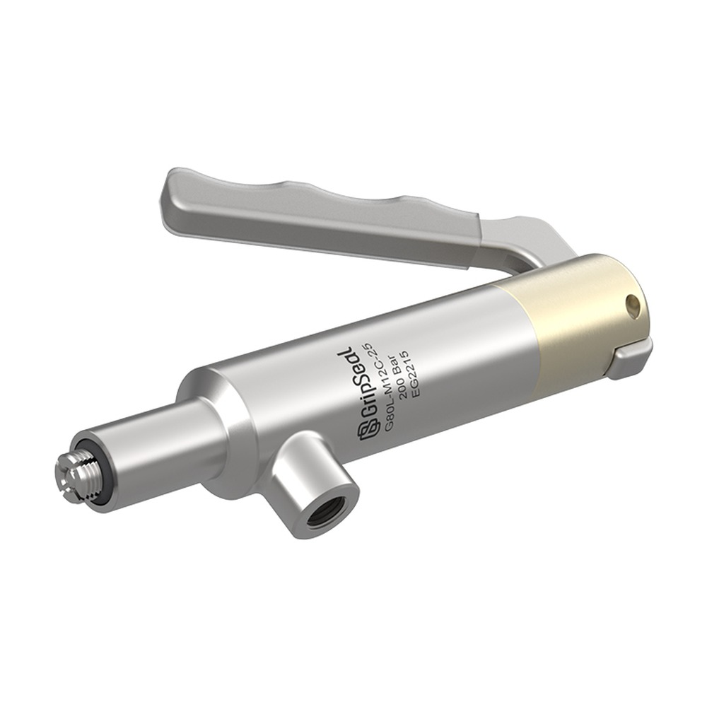
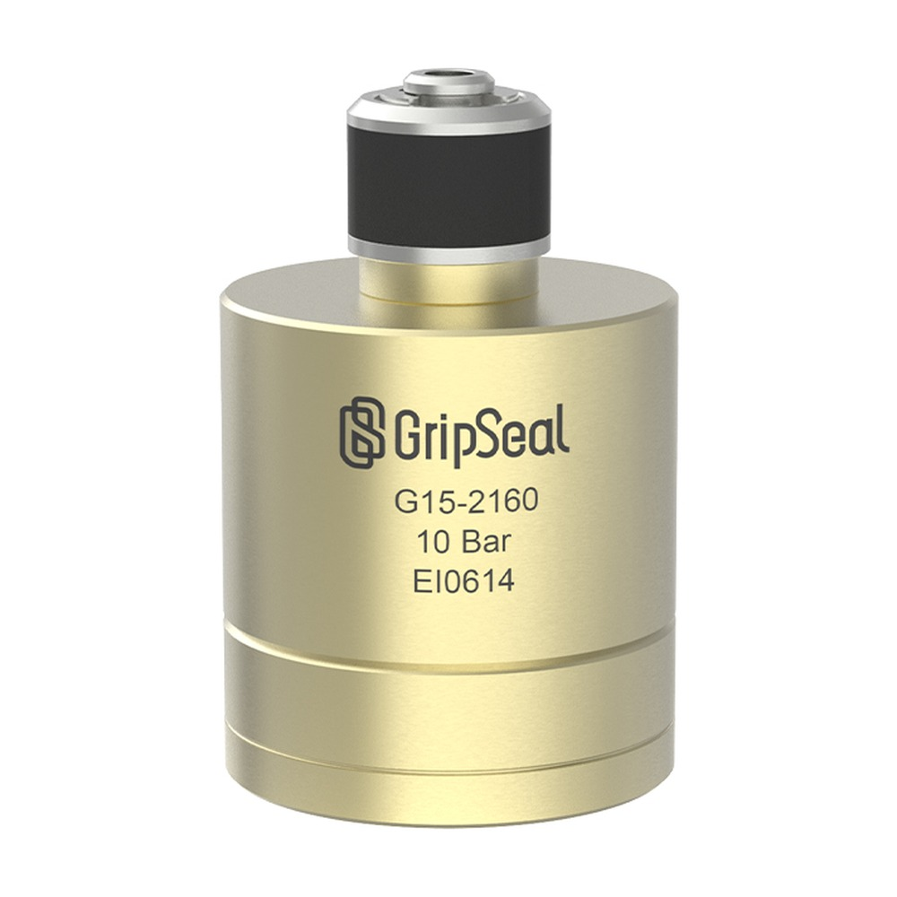
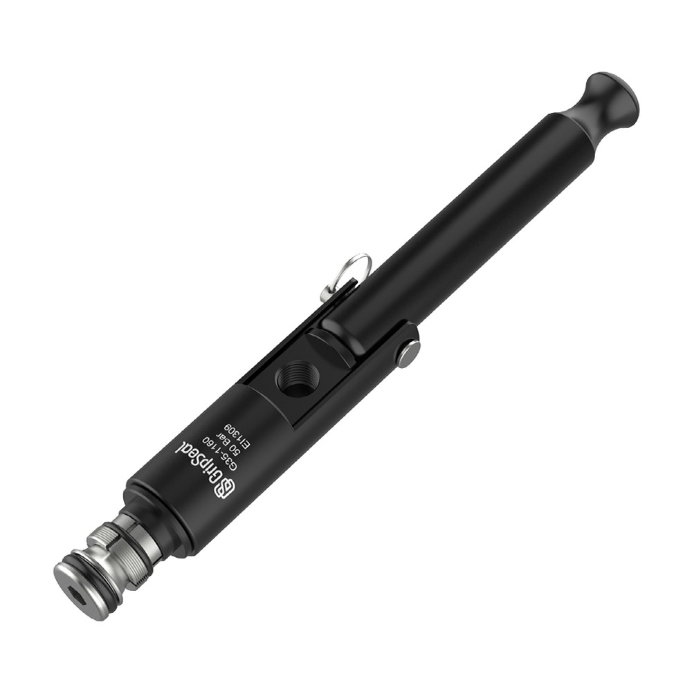

For external-thread ports in plumbing appliances, water heaters, instruments and high-pressure test stations: threaded jaws lock with a face seal, completing air-tightness and pressure test connections without repeated screwing.



Fast sealing connection for external-thread ports without repeated screwing, improving connection efficiency and reducing thread wear from frequent testing.
Prioritise this model when the workpiece has an external thread and testing needs fast clamping, repeated sealing and manual or pneumatic actuation options.
| Max. working pressure | Vacuum to 350 Bar (see selection table for series pressure ratings) |
|---|---|
| Sealing Range | Per the relevant catalog selection table: plumbing BSPP1/4 – 3/4; high-pressure internal cone M10–M22, BSPP, UNF; instrument BSPP1/8 – 1/2, M10–M20 |
| External thread height | Per the relevant catalog selection table: 9 / 12 / 15 mm |
| Media port | BSPP1/8, BSPP1/4, BSPP3/8 |
| Body material | 316 stainless steel |
| Main seal | NBR (Neoprene for the plumbing series) |
| Internal seal | NBR |
| Actuation | Pneumatic, button valve or lever (operating handle, drive type optional) |
| Operating temperature | -20 °C to +120 °C |
| Structural highlights | Threaded Jaws, Face Seal, G-thread fluid port, 316 stainless steel body |

Pneumatic, button valve and lever modes cover different benches, fixtures and line requirements.
Threaded jaws carry the mechanical load in high-pressure testing, avoiding thread damage while improving connection efficiency.
Excellent mechanical properties, strong and wear-resistant, ensuring ultra-high pressure ratings and significantly longer connector life.
A large-bore flow path greatly reduces flow loss and impact on run-in tests; the face seal is easy to replace with low maintenance cost, and seal materials can be chosen for different fluids.
For high-pressure testing of pressure sensors, hydraulic valves and similar; the plumbing series is rated 20 Bar, so choose the series by station pressure.
For lever versions, press the handle down first to open the threaded jaws.
Insert the test fitting until the thread face fully contacts the main face seal.
Release the handle; the jaws retract to grip the external thread and complete the sealed connection.
| Series | Example models | Thread / port range | Max. pressure | Seal material |
|---|---|---|---|---|
| Plumbing straight / side outlet | G85V-085 / G85V-125; G85V-085HF / G85V-125HF | BSPP1/2, BSPP3/4 | 20 Bar | Neoprene |
| Plumbing lever | G85L-G02-A001 / G03-A001 / G04-A001 | BSPP1/4, BSPP3/8, BSPP1/2 | 20 Bar | Neoprene |
| High-pressure internal cone | G85L-M12E-A601 / M14E-A241 / M12E-A901, etc. | M10–M16 metric, BSPP1/4, BSPP3/8; cone angle 24° / 60° / 90° | 350 Bar | NBR |
| High-pressure external cone | G85L-M14E-B741 / U06-B601 / M22E-B901 | M14×1.5, UNF9/16-18, M22×1.5 | 100 / 200 / 50 Bar | NBR |
| Instrument series | G85C-G01 / G02 / G04 / M10C / M14E / M20E | BSPP1/8, 1/4, 1/2; M10×1.0, M14×1.5, M20×1.5 | 350 Bar | NBR |
Real applications in the catalog cover gas stoves, wall-hung water heaters, sanitary piping, and high-pressure testing of pressure sensors and hydraulic valves.
Outgoing air-tightness testing of external-thread ports on gas appliances, avoiding thread wear from repeated screwing.
Repeated leak and water-flow testing of plumbing appliance water ports, with straight / side outlet / lever structures available.
Piping tests for sanitary products where fast connection and thread protection both matter.
350 Bar high-pressure internal cone and instrument series cover high-pressure testing of pressure sensors, hydraulic valves and instrument ports.
From samples to volume use, sample arrangements, spare parts and replacement support can be confirmed per project, reducing uncertainty in testing.
Standard connector samples or trial arrangements can be discussed to reduce uncertainty in testing.
Connector inspection, spare parts and replacement support can be reviewed to keep testing running.
If the selected model does not match the actual port, replacement or adjustment can be reviewed under the order terms.
Maintenance, refurbishment and reuse can be considered to reduce long-term connection cost.
Before fixing the final model, compare adjacent connection and sealing series.

For comparing test methods on special tubing, cooling channels, fuel lines and non-circular ports.
View Series
Compare when the workpiece has an internal thread rather than an external thread.
View Series
For comparison with automated ID pneumatic sealing on fuel lines and high-volume test lines.
View Series
For comparison with ID sealing of copper, steel and aluminium tube in refrigeration and new energy testing.
View Series